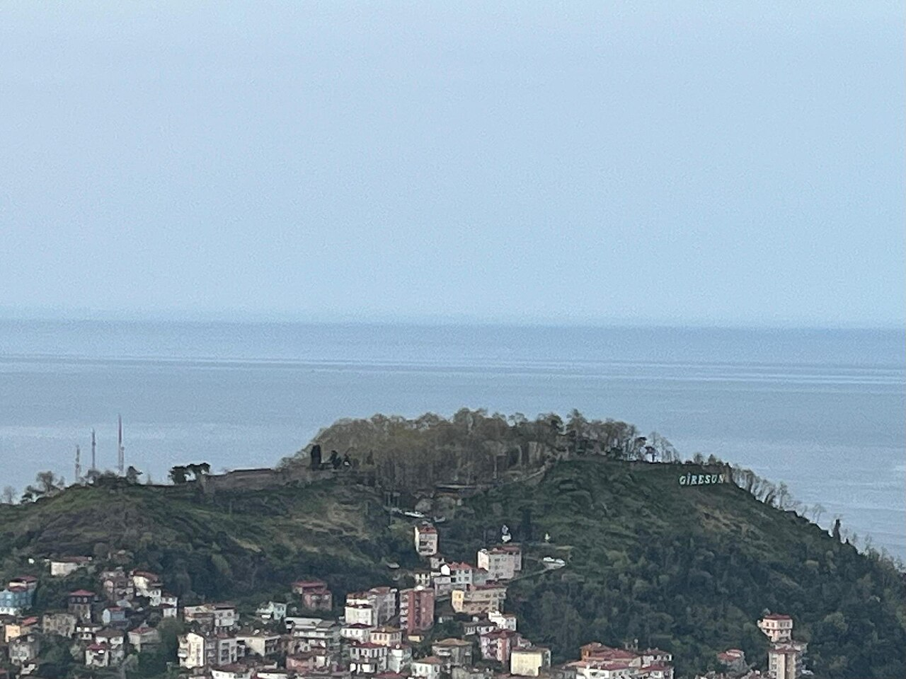
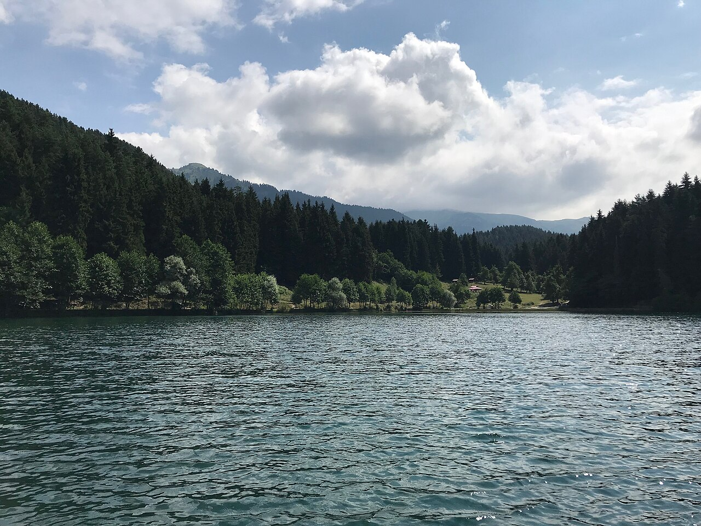
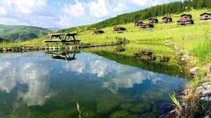
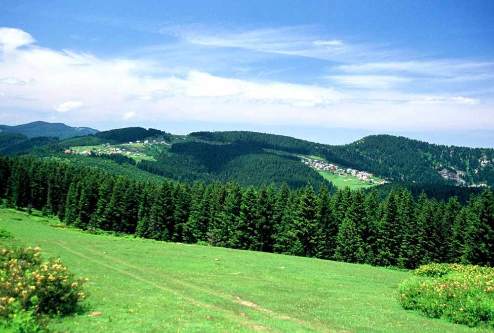
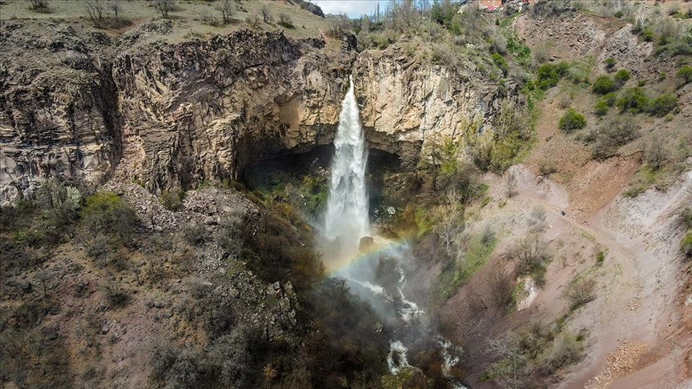
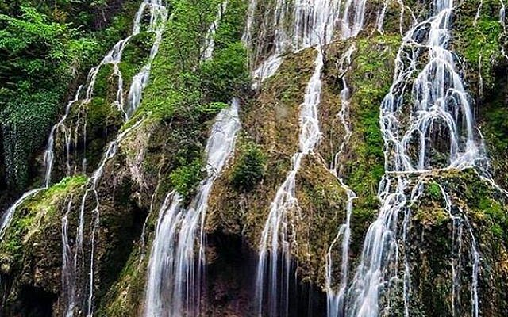
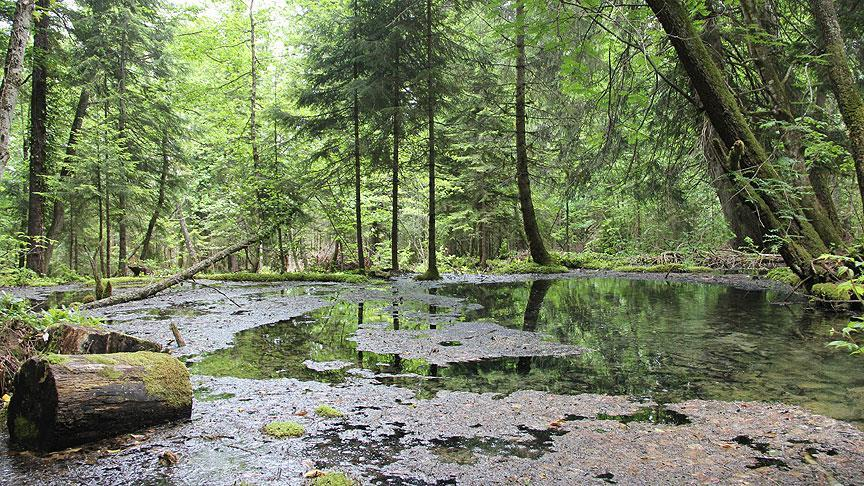
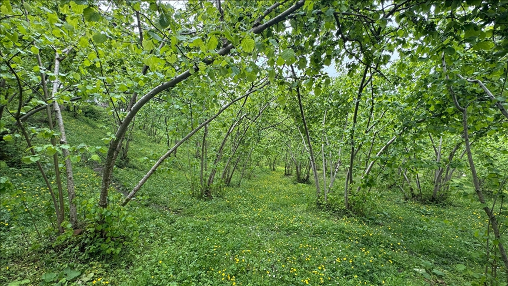
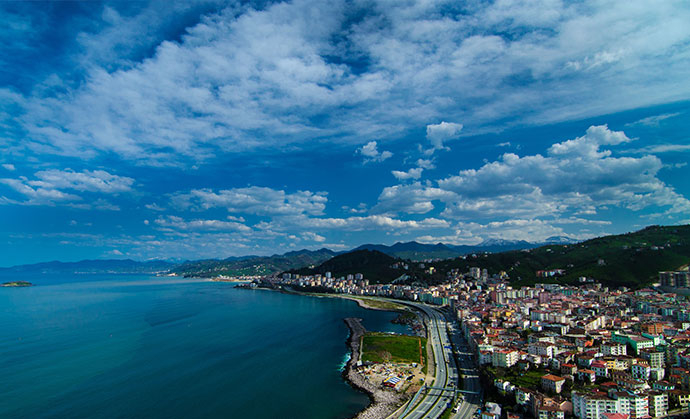

İşlem başarılı!
Bu kategoride sonuç yok.

Karagöl-Sahara Milli Parkı'nın kalbi. Sabah sislerinin gölü sardığı anlarda masalsı bir atmosfer oluşur; çevresi yürüyüş yollarıyla donatılmıştır.

Karagöl-Sahara Milli Parkı içindeki bu göl, sarp dağ yamaçlarıyla çevrili eşsiz konumuyla dağcılık ve fotoğrafçılık tutkunlarını büyüler.

Yemyeşil çayırları, berrak suları ve festivalleriyle Giresun'un en popüler yaylası. Doğa yürüyüşü ve kamp için mükemmel.

2200 m ile Giresun'un zirvelerinden biri. Fırtına bulutlarının eteklerinde huzur arayan macera tutkunlarına adeta çağrı yapar.

Coşkuyla dökülen 23 metrelik şelale. İlkbaharda karların erimesiyle en güçlü hâline kavuşur; piknik alanlarıyla aile dostu bir destinasyon.

Yağlıdere ilçesindeki ormanlık vadide saklanan bu şelale, sessizliği ve doğallığıyla off-road doğa tutkunlarının favorisi.

İlin yüzölçümünün %64'ünü kaplayan ormanlar; karaçam, kayın, ladin ve gürgen ağaçlarının oluşturduğu eşsiz bir biyoçeşitlilik barındırır.

Yamaçları kaplayan fındık bahçeleri, ilkbaharda çiçeklendiğinde görsel şölen sunar. Ağustos hasatı yörenin en büyük sevincidir.

Dağların yemyeşiliyle Karadeniz'in mavisinin buluştuğu kıyı şeridi. Bulancak ve Eynesil plajları bölgenin en gözde sahilleridir.